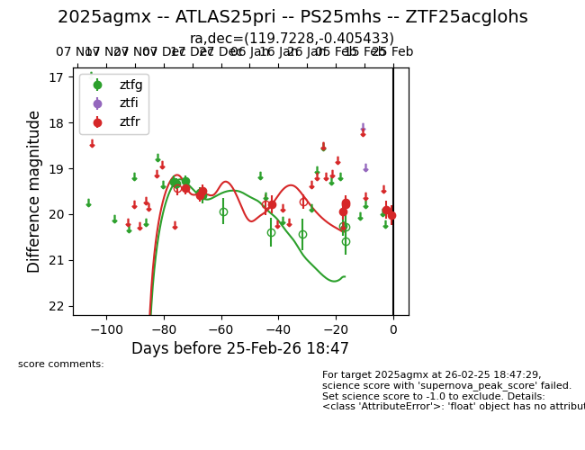
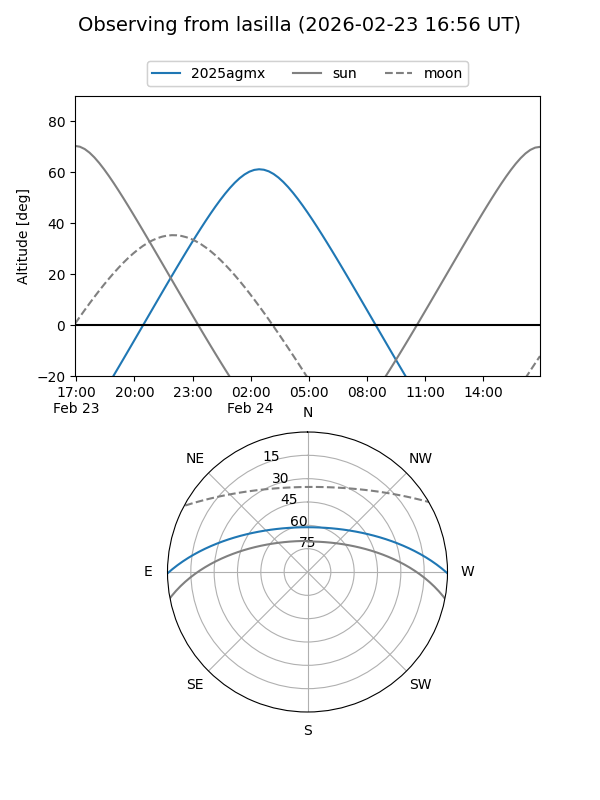
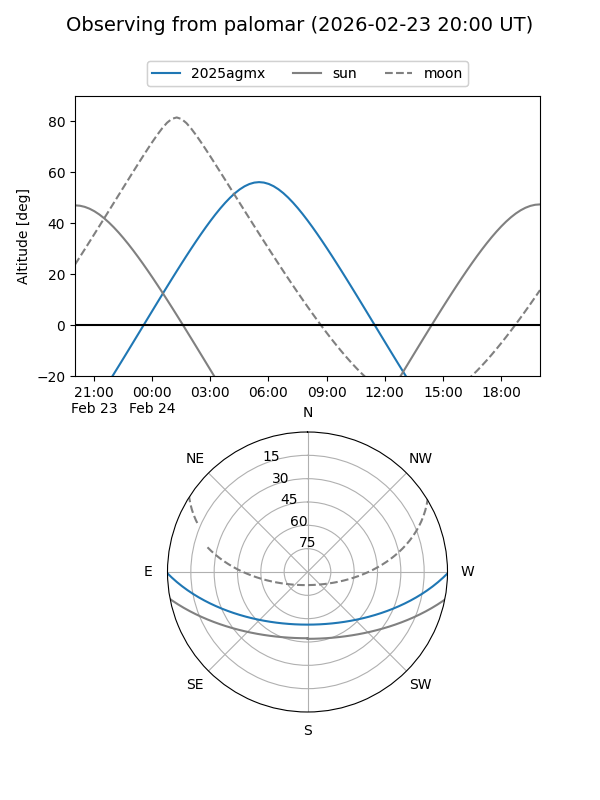

2025agmx
Target 2025agmx at 2025-12-20 11:39
Aliases and brokers:
FINK: fink-portal.org/ZTF25acglohs
Lasair: lasair-ztf.lsst.ac.uk/objects/ZTF25acglohs
ALeRCE: alerce.online/object/ZTF25acglohs
TNS: wis-tns.org/object/2025agmx
YSE: ziggy.ucolick.org/yse/transient_detail/2025agmx
alt names
ZTF25acglohs (ztf,fink_ztf)
2025agmx (tns,yse)
Coordinates:
equatorial (ra, dec) = 119.7229,-0.40536
equatorial (HMS+DMS) = 07:58:53.49,-00:24:19.28
galactic (l, b) = (221.1711,+14.77031)
Flags:
Photometry:
last ztfg=19.28, ztfr=19.59
3 ztfg, 2 ztfr detections
Lightcurve

Visibility


Additional plots